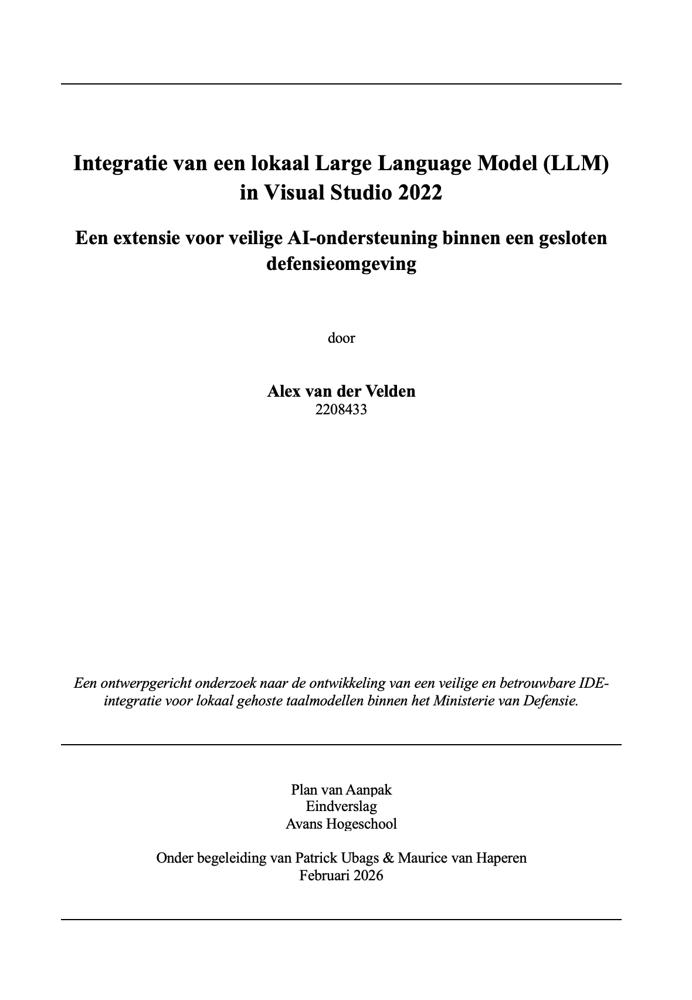

Dit digitale research portfolio is ontwikkeld ter ondersteuning van het ontwerpgerichte afstudeeronderzoek binnen de opleiding Informatica Deeltijd. Het doel is het expliciet en transparant maken van de logische herleidbaarheid van het onderzoek: van probleemstelling en onderzoeksvragen, via theoretische onderbouwing en methodische keuzes, naar ontwerpbeslissingen, realisatie en evaluatie.
Met traditionele documenten (zoals losse rapportages, PowerPointpresentaties en spreadsheets) raak je deze samenhang vaak kwijt. Omdat er geen geschikte online tool beschikbaar was om interactieve, herleidbare procesdiagrammen te presenteren, heb ik deze webomgeving ontworpen en gerealiseerd als integraal onderzoeksinstrument.
Voor mij heeft dit portfolio gedurende het traject gefunctioneerd als een digitaal whiteboard en een dynamische mindmap. Het bood de mogelijkheid om uit te zoomen, verbanden zichtbaar te maken en het geheel van probleem, deelonderzoeken en beroepsproducten steeds opnieuw in samenhang te bekijken. Door structuur, fasering en deliverables visueel en interactief te modelleren, kon ik mijn denkproces expliciteren en toetsen of mijn keuzes logisch voortbouwden op eerdere stappen.
Ik heb bewust gekozen voor een interactieve webomgeving, zodat dit instrument niet alleen voor mijzelf bruikbaar was, maar ook eenvoudig gedeeld kon worden met begeleiders en stakeholders. Tijdens de eindpresentatie en verdediging biedt deze omgeving een transparante en navigeerbare representatie van het volledige traject, waarin keuzes, deelonderzoeken en beroepsproducten direct in relatie tot elkaar kunnen worden toegelicht.

Hoe kan een lokaal gehost LLM veilig en beheersbaar worden geïntegreerd in Visual Studio 2022 binnen een gesloten defensieomgeving, zodat ontwikkelaars AI-ondersteuning kunnen benutten zonder de geldende beveiligingskaders te schenden?